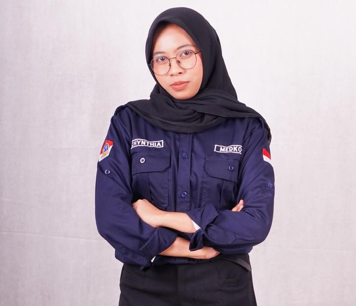

Program Studi Sistem Informasi - Universitas Dian Nuswantoro
A. Profil Saya

Halo! Nama saya Chynthia Rahma, mahasiswa Program Studi Sistem Informasi di Fakultas Ilmu Komputer, Universitas Dian Nuswantoro.
Saya memiliki ketertarikan pada bidang UI/UX, pengembangan website, dan perancangan sistem informasi. Saya senang mempelajari hal-hal baru,
terutama yang berkaitan dengan teknologi, desain, dan bagaimana sebuah sistem dapat dibuat agar mudah digunakan.
Saya memiliki pengalaman mengerjakan beberapa proyek perkuliahan, seperti membuat desain antarmuka website, menyusun struktur halaman menggunakan HTML,
serta merancang dan mengembangkan sistem sederhana. Melalui proyek tersebut, saya belajar memahami kebutuhan pengguna,
membuat tampilan yang lebih terstruktur, dan bekerja sama dalam menyelesaikan tugas
Selain kegiatan perkuliahan, saya juga aktif dalam organisasi dan kepanitiaan kampus.
Dari pengalaman tersebut, saya belajar tentang kerja sama tim, komunikasi, tanggung jawab, dan penyelesaian masalah.
Berbagai pengalaman tersebut membantu saya untuk terus mengembangkan kemampuan, baik dalam bidang teknologi maupun kemampuan diri.
Saya membuat beberapa proyek UI/UX design, seperti desain aplikasi dan website sederhana,
yang bertujuan untuk melatih kemampuan saya dalam merancang tampilan antarmuka yang menarik sekaligus fungsional. Dari proses tersebut,
saya belajar mengenai pentingnya memahami kebutuhan pengguna,menyusun alur penggunaan yang jelas,
serta mengatur elemen desain agar lebih mudah dipahami.
Graphic Designer
Saya membuat berbagai proyek desain grafis, seperti poster, banner, konten media sosial, dan kebutuhan visual untuk kegiatan organisasi.
Dari proses tersebut, saya belajar bagaimana mengembangkan konsep visual, memilih warna dan tipografi yang sesuai, serta menyusun elemen desain agar terlihat menarik dan mudah dipahami.
Web Development
Saya membuat beberapa proyek web sederhana menggunakan HTML dan CSS, seperti website portofolio dan halaman informasi. Dari proses tersebut, saya belajar mengenai struktur dasar website,
penggunaan elemen HTML, pengaturan tampilan dengan CSS, serta membuat halaman web yang rapi dan mudah digunakan.
2. Hobi & Minat
Membaca — Menikmati berbagai jenis bacaan untuk menambah wawasan dan mendapatkan perspektif baru.
Menulis — Menuangkan ide dan pikiran melalui tulisan serta mengeksplorasi cara menyampaikan sesuatu dengan kreatif.
D. Proyek & Aktivitas Akademik
Tugas Pemrograman Web 1
Proyek ini adalah pembuatan halaman profil dan form interaktif menggunakan struktur elemen semantik HTML, tabel terstruktur,dan beberapa elemen input form.
LuminaQA merupakan proyek tugas akhir saya saat SMK berupa aplikasi Computer-Based Test (CBT) yang digunakan di sekolah. Pada pengerjaan proyek ini,
saya berperan sebagai UI/UX Designer dengan tugas melakukan riset pengguna untuk menentukan alur penggunaan yang tepat.
Selain itu, saya juga merancang tampilan aplikasi agar lebih user-friendly dengan menggunakan software Figma,
sehingga aplikasi dapat digunakan dengan mudah oleh guru maupun siswa
Digikom adalah aplikasi layanan digital terpadu yang menyediakan fitur informasi, pembayaran, dan pendidikan,
termasuk pembayaran tagihan, PPDB, serta tambahan fitur seperti asrama dan merchant.
Dalam proyek ini saya berperan sebagai UI/UX Designer dengan merancang tampilan aplikasi yang sederhana dan user-friendly menggunakan Figma.
E. Form Kontak Pengunjung
Silakan isi form di bawah ini untuk mengirimkan pesan: